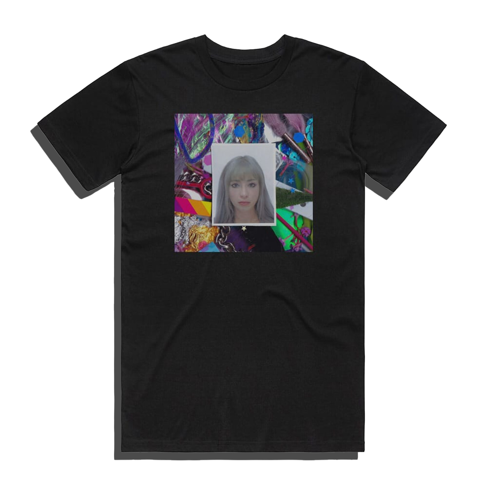

Shop
See More!
About Us
Kero Kero Bonito is a British indie pop band known for their vibrant blend of genres, including pop, J-pop, electronic, and hip-hop influences. Formed in London in 2013, the group consists of vocalist Sarah Midori Perry and producers Gus Lobban and Jamie Bulled. Their music is characterized by playful melodies, bilingual lyrics in English and Japanese, and themes that range from everyday life to existential musings. They first gained attention with their debut mixtape Intro Bonito and broke into the mainstream with their hit single "Flamingo." Over time, their sound evolved from bubblegum pop to a more experimental and rock-influenced style, as heard in albums like Time 'n' Place and Civilisation II. Kero Kero Bonito has cultivated a passionate fanbase worldwide, celebrated for their creative approach and vibrant aesthetic.